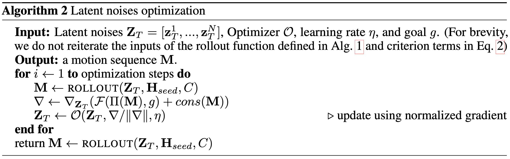

The Thirteenth International Conference on Learning Representations (ICLR 2025), Spotlight
Overview
In this work, we present DART, a Diffusion-based Autoregressive motion model for Real-time Text-driven motion control. DART achieves high-quality and efficient ( > 300 frames per second on single RTX 4090 GPU) motion generation conditioned on online streams of text prompts. Furthermore, by integrating latent space optimization and reinforcement learning-based controls, DART enables various motion generation applications with spatial constraints and goals, including motion in-between, waypoint goal reaching, and human-scene interaction generation.
Method
DART
DART uses an architechture of autoregressive latent diffusion to learn a motion primitive space jointly conditioned on the text prompts and motion history. The encoder and decoder networks are frozen during the training of the denoiser network.
Illustration of online text-to-motion using DART:
An example rollout result:
Motion control in latent space
Text-conditioned motion generation offers a user-friendly interface for controlling motions through
natural language. However, relying solely on text limits precise spatial control, such as walking to
a specific location or sitting in a designated spot. Therefore, it is necessary to incorporate motion
control mechanisms to achieve precise spatial goals, including reaching a keyframe body pose,
following joint trajectories, and interacting with scene objects.
We formulate motion control as a minimization problem, aiming to identify motion sequences that are closest to the spatial objectives while adhering to regularization terms derived from scene and physical constraints.
We explore two methods leveraging the latent motion space of DART to solve this problem: gradient descent-based latent diffusion noise optimization, and reinforcement learning with the learned latent action space.

Formulation of motion generation with spatial goals and constraints.

Algorithm of motion control via latent diffusion noise optimization.
Illustration of the reinforcement-learning policy-based control.
Results
Text-conditioned temporal motion composition
Command-line text-driven interactive demo
Motion control via latent diffusion noise optimization
Text-conditioned motion in-between
Integrating DART with latent space optimization-based control enables the generation of high-quality intermediate motions that smoothly transition between the keyframes conditioned on the text semantics. Our method outperforms the baseline DNO, particularly in terms of semantic alignment with the text prompts.
"A person dances"
20 FPS, duration 4 seconds (initial frame not visualized to reduce occlusion)
"A person crawls"
20 FPS, duration 4 seconds (initial frame not visualized to reduce occlusion)
"A person crawls"
20 FPS, duration 4 seconds, (initial frame not visualized to reduce occlusion)
Human-scene interaction
We present preliminary results of synthesizing human-scene interactions by inputting text prompts, scene SDF (signed distance field), and a goal pelvis joint location. The red sphere in the visualizations represents the given goal pelvis joint location.
Motion control via reinforcement learning
Text-conditioned waypoint goal reaching
The waypoint reaching task requires the human agent to sequentially reach dynamically updated goals, each visualized as a yellow torus. A new goal waypoint is given to the human agent only after the current waypoint has been successfully reached.
Ours: "walk"
Ours: "run"
Ours: "hop on left leg"
Random goal-reaching generation results conditioned on the text prompt "walk". The red sphere represents the goal location which is dynamically updated upon reaching. (The time of goal-reaching can be different among sequences. We visulize the goals according to the reaching time of the white body in this video.)
Our method, combining DART with RL-based control, can generate 240 frames per second when tested on a single RTX 4090 GPU. Moreover, our method enables the selection of locomotion styles by conditioning the policy with various text prompts, a capability that extends beyond the scope of existing works.
More Results
Combination with physics-based motion tracking
As a kinematic-based approach, DART may produce physically inaccurate motions with artifacts such as skating and floating. To address this, we demonstrate that DART can be integrated with physically simulated motion tracking methods, specifically PHC, to generate more physically plausible motions.
In the video below, we present an example sequence of a person crawling.
The raw generation results from DART exhibit artifacts such as hand-floor penetration. Applying physics-based tracking to refine the raw motion successfully produces more physically plausible results, improving joint-floor contact and eliminating penetration artifacts. This integration combines the versatile text-driven motion generation of DART with the physical accuracy provided by the physics-based simulation.
Perpetual rollout given the same text prompt
Our DART can autoregressively generate perpetual rollouts of actions that are inherently repeatable
and extendable. For example, DART can produce minutes-long sequences of continuous human
motion, such as jogging in circles, performing cartwheels, or dancing as shown in the videos below. These actions are inherently
repeatable, and such extensions are also represented in the AMASS dataset.
DART can stably generate minutes-long rollouts of the same action, enabled by its autoregressive
motion primitive modeling and scheduled training scheme.
Some other actions, however, have inherent boundary states that mark the completion of the action.
For instance, “kneel down” reaches a boundary state where the knees achieve contact with the floor, as shown in the tab of Kneel down below.
Further extrapolation of “kneel down” beyond this boundary state is not represented in the dataset and
is not intuitively anticipatable by humans, as no further motion logically extends within the action
semantics. Continuing rollout using the “kneel down” text prompt results in motions exhibiting
fluctuations around the boundary state.
"jog in circels", 30 FPS
"cartwheel", 30 FPS
"dance", 30 FPS
"Kneel down", 30 FPS
In summary, long rollout results given a single text prompt will repeat naturally or fluctuate around a boundary state, depending on the inherent nature of the action and its representation in the dataset.
Semantic ambiguity in using coarse sequence label
We demonstrate in the video below an example of random action execution due to semantic ambiguity in using coarse sequence-level text prompts. Given text prompts describing all actions in one sentence, our generated result shows random transitions among actions, disregarding the specified action orders. This issue arises from the semantic ambiguity of using global sequence-level text prompts to guide the generation of short, local motion primitives. The primitive model may generate any one of the actions in the sentence label that is locally feasible, leading to unpredictable transitions. However, we also show in the video below that our method can generate motion results adhering to the intended action order by explicitly decomposing the sentence prompt into a sequence of individual action prompts. This explicit prompt decomposition could potentially be achieved through a hierarchical model design or by leveraging common-sense reasoning in language models, such as GPT-4.
Dense and sparse joint control
Examples of dense and sparse joint control using the proposed motion control via latent diffusion noise optimization.
"a person punches", 20 FPS
Joint control: left wrist location at 2s (colored as red dot)
"a person is waving his right hand", 20 FPS
Joint control: right wrist trajectory, 30th-90th frame (colors from dark to red indicate time)
Citation
@inproceedings{Zhao:DART:2025,
title = {A Diffusion-Based Autoregressive Motion Model for Real-Time Text-Driven Motion Control},
author = {Zhao, Kaifeng and Li, Gen and Tang, Siyu},
booktitle = {The Thirteenth International Conference on Learning Representations (ICLR 2025)},
year = {2025}
}
Acknowledgements
We sincerely acknowledge the anonymous reviewers for their insightful feedback. We thank Korrawe Karunratanakul for helpful discussion and suggestions, and Siwei Zhang for meticulous proofreading. Kaifeng Zhao is supported by the SDSC PhD fellowship.